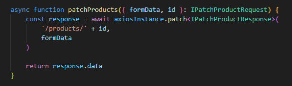
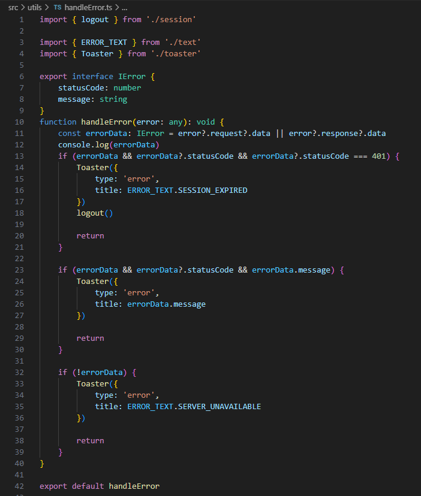
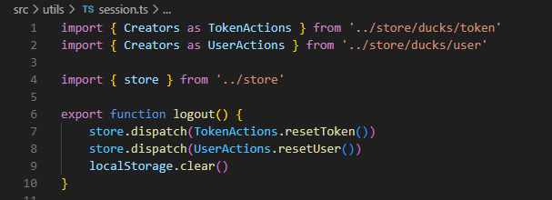

2.7- Tratamento de Erros
O escopo desta seção, atualmente, resume-se a erros ocorridos no acesso a APIs externas.
O objetivo por detrás deste design é concentrar o código de tratamento de erros em um único local, de modo a reduzir inconsistências em manutenções futuras e de modo a deixar todo o código do aplicativo mais leve, por estar 'limpo' de código que trata erros.
O que foi feito foi, incluir 2 funções anônimas para tratamento de erros nos interceptadores do objeto axiosInstance, definidas no arquivo /src/service/axiosInstance, conforme explicado na seção anterior, 2.6- Acesso a APIs externas.
Uma função intercepta os erros ocorridos no envio de todas as requests e a outra intercepta os erros ocorridos na chegada de todas as respostas da API. Tais funções chamam, então, a função handleError(err) definida no arquivo /src/utils/handleError.ts.
Este design é interessante porque torna desnecessário capturar erros, usando as keywords try e catch, nas funções de mais alto nível, que chamam os métodos do objeto axiosInstance, por exemplo, no código abaixo.

Isto acontece, porque tais erros, quando ocorrem, são capturados e tratados antes pela função handleError(...), como explicado acima.
No código exemplo acima, se a função patchProducts alcançou a linha
return response.data
isso significa que não ocorreram erros de comunicação, pois se tivessem ocorrido, já teriam sido capturados e direcionados para a função handleError(...).
Por fim, vamos explicar o funcionamento da função handleError(...), exibida abaixo.

A função handleError(...) recebe como parâmetro o objeto retornado pela resposta do método utilizado do objeto axiosInstance. Por exemplo, se foi chamado o método axiosInstance.post, esta função irá receber o objeto de resposta do método .post.
Basicamente, a função verifica se houve um erro de comunicação 401, que indicaria problemas de autenticação do usuário na request e, caso tenha recebido esse tipo de erro, força o logout do aplicativo encerrando a sessão, chamando para isso a função logout(), definida no arquivo /src/utils/session.ts, reproduzida abaixo.

Observe, que o store redux é reiniciado, por essa função.
No caso de o erro, não ser um problema de autenticação, a função handleError(...) apenas exibe na tela um objeto do tipo toaster, informando ao usuário o erro ocorrido.
Por fim, caso a resposta vinda do backend não contenha status code ou uma message de erro, geralmente por timeout na resposta, handleError(...) exibe o objeto do tipo toaster, informando ao usuário que o servidor está indisponível, o que pode indicar problemas no servidor, na internet ou intranet.